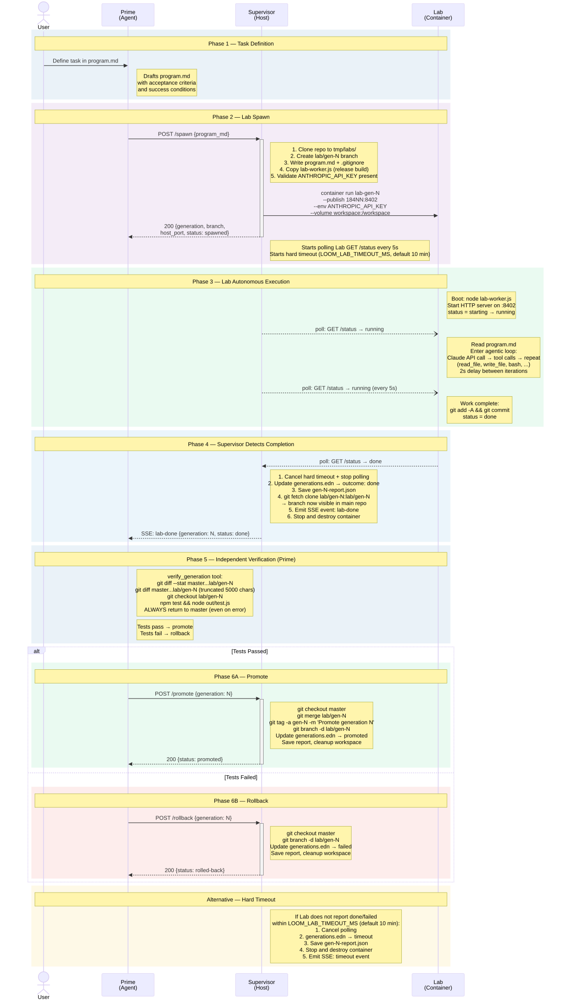

First Light: Loom's Self-Modification Pipeline in 2,214 Lines
Building a self-modifying agent isn't a single breakthrough moment. It's a sequence of failures, each one revealing something the spec didn't anticipate. We ran 17 generations. Explore them below.
The first twelve generations were a debugging marathon. Gen-1 was the proof of concept — a Lab that added line numbers to the read_file tool — but getting there required manual orchestration and exposed fragile git operations. Gens 2–5 failed outright: missing API keys, broken container networking, build artifacts not copied correctly. Gens 6–9 introduced timeouts as the default failure mode — Labs that booted fine but couldn't complete work before the 5-minute (later 10-minute) deadline.
The turning point came between gen-9 and gen-10. Five critical bugs were identified and fixed in a single hardening session:
- API key injection. The Supervisor wasn't forwarding
ANTHROPIC_API_KEYinto Lab containers. Labs booted, tried to call Claude, and silently hung. - Branch propagation. Lab commits were stranded in the container's cloned repo. The Supervisor needed an explicit
git fetchto pull the branch back into the main repo for Prime's verification. - Port allocation. Multiple Labs on the same port caused container startup failures. Fixed with deterministic port mapping:
18400 + gen-num. - Timeout accounting. The hard timeout timer started at spawn time, not container-ready time. Boot overhead ate into work time.
- Status detection. Polling
/statusused a single HTTP request without retry. If the Lab wasn't ready yet, the Supervisor concluded it had failed.
After hardening, gens 13–17 ran back-to-back with zero failures. Five for five. Average duration: 36 seconds. The pipeline works.
The sequence diagram below shows exactly what happens during a single generation — from task definition through to promote or rollback. Six phases, four actors, one complete loop.

The key property: the Lab is fully autonomous. It reads program.md, enters an agentic loop (Claude API → tool calls → repeat), commits its work, and reports done. Prime doesn't guide the Lab. It polls /status and waits. When the Lab finishes, Prime pulls the branch and verifies independently: git diff to see what changed, then npm test to confirm nothing broke.
The Supervisor orchestrates infrastructure — cloning repos, creating containers, managing branches and tags, enforcing timeouts — but makes no decisions about the work itself. It's plumbing, not policy.
The first real self-modification was modest by design: add line numbers to the read_file tool output. The program.md spelled it out precisely:
# Task: Add line numbers to read_file tool output
In src/loom/agent/tools.cljs, modify the read-file function.
After reading file content, split into lines and prepend
1-based line numbers. Format: right-aligned number padded
to width of max line number, tab, then line content.
Also update test expectations in test/loom/tools_test.cljs
to match the new output format.
## IMPORTANT
- Do NOT run npm test or npx shadow-cljs.
They are not available in the container.
- Just make the edits and let the auto-commit handle the rest.The Lab read the program, opened both files, made the edits, and committed. Prime pulled the branch, ran the test suite, confirmed all 90 tests passed, and promoted. The diff: 12 lines changed across two files. Total time: under 40 seconds.
It's not impressive as a code change. It's impressive as a cycle. An autonomous agent running in a VM wrote code, and a second agent independently verified that code worked before merging it. No human touched any file between spawn and promote.
After reaching stability, we ran a full architecture review of the 2,214-line codebase. The findings were mixed — strong fundamentals, but real gaps in verification and observability.
The codebase: 19 source files, 13 test files, ~1:1 test-to-source ratio by LOC. Only dependencies: Malli (schemas) and shadow-cljs (compilation). No frameworks.
| Dimension | Status | Gap |
|---|---|---|
| Core loop | Working | — |
| Self-modification proof | Partial | Only trivial tasks proven; no agent code modification promoted |
| Test coverage | Strong | No integration test with real containers |
| Dead code | ~7% | Eval client/server compiled but never called (146 LOC) |
| Observability | Basic | No diff visibility, no per-generation metrics |
| Code legibility | Good | supervisor/http.cljs at 307 lines does too many things |
Three findings matter most:
1. Verification is too shallow. verify_generation runs npm test — that's it. No eval probes, no benchmarks, no code quality checks. For trivial file operations this is fine. For actual self-modification — rewriting the agentic loop, changing the context manager — a Lab could introduce a subtle regression that passes all 90 tests. Prime promotes blindly if tests are green.
2. No visibility into what changed. The verification flow didn't include git diff. Prime had no idea what the Lab actually modified — only whether tests passed. This was fixed during hardening (diff stats and truncated diff now included), but the deeper issue remains: Prime has no semantic understanding of changes, only syntactic pass/fail.
3. Three Malli schemas are decorative. Proposal, ProbeResult, and Verdict — declared as "fixed-point contracts" in the README — are defined but never validated. The real contract is POST /spawn with a program_md string and POST /promote with a generation number. Plain JSON, unvalidated. The conceptual framework of "mutable code + immutable contracts" depends on those contracts being load-bearing. Right now they're aspirational.
- Clean separation of concerns. Agent, Supervisor, Lab are genuinely independent. Different build targets, different runtime environments, no shared mutable state.
- Minimal dependencies. The entire system uses Malli for schemas and shadow-cljs for compilation. No HTTP frameworks, no ORMs, no middleware. Node's built-in
httpmodule handles all endpoints. - Git as source of truth. Branches, tags, and
generations.ednmake the full history recoverable from the repo alone. Every generation is a branch. Every promotion is a tag. Rollback to any generation is onegit checkoutaway. - Container isolation. Labs run in Apple Containerization VMs with no shared state. A bad modification can't escape. A malicious
eval-strcan't touch the host or Prime. - Compact codebase. 2,214 LOC for a working self-modifying agent is lean. The test suite (2,100 LOC, 90 tests) is nearly as large as the source.
The MVP proves the pipeline works. It doesn't prove recursive self-improvement. Three things are missing:
No generation has modified agent code. Every successful program.md has been a trivial operation — add a comment, create a text file, count source files. Gen-1 (add line numbers to read_file) is the only one that touched agent functionality, and that was manually orchestrated. We haven't demonstrated that a Lab can make a meaningful change to the agent's own behavior and have Prime verify and promote it.
Prime has no agency. It's a chatbot with tools. The user writes program.md, tells Prime to execute it, Prime mechanically spawns/verifies/promotes. There's no decision-making, no prioritization, no self-assessment. The "self" in self-improvement is the user's judgment, not the agent's.
No fitness function. Self-improvement requires measuring improvement. We track timing and outcome (done/failed/timeout) but not: test count, code coverage, token efficiency, tool call counts. Without quantitative metrics across generations, "improvement" is unmeasurable.
The MVP proves the pipeline works (human writes program.md → Lab executes → verify → promote/rollback). The next step is making it genuinely recursive: Prime autonomously proposes and executes its own next improvement.
This requires a reflect step. After every promote or rollback, Prime enters a reflection phase:
- Analyze the generation report — what changed, outcome, timing, metrics
- Read
priorities.mdfor user-directed goals - Review the current codebase state — test results, architecture gaps, open tasks
- Generate the next
program.md— the smallest change that most improves the target metric - Spawn a new Lab and continue the loop
But reflect without data is hallucination. Three prerequisites before implementing it:
| Prerequisite | Why | Status |
|---|---|---|
| Enrich generation reports | Reflect needs token counts, diff stats, test pass/fail, duration breakdown | Not implemented |
| Define fitness function | What must improve? Test count, coverage, token efficiency, user-defined? | Not implemented |
Create priorities.md | User-authored file Prime reads during reflect to know what to work on | Not implemented |
The loop also needs safety valves: a generation cap (LOOM_MAX_GENERATIONS), a token budget, fitness plateau detection (no improvement over N generations), and human interrupt (SIGINT gracefully stops the loop).
The compelling demo: "I pointed it at itself and walked away. Here's what it improved." We're one milestone away. The pipeline is proven. The reflect step is next.
- Labs cannot self-test. Shadow-cljs compilation takes ~25 seconds inside the container VM, eating most of the timeout budget. Labs must not run
npm test— Prime'sverify_generationruns tests host-side after the Lab reports done. - Tailscale breaks containers. Apple Containerization's
vmnetrouting fails with Tailscale active. Disconnect VPN before running Labs. - macOS 26 + Apple Silicon only. Apple Containerization requires macOS 26 on Apple Silicon. No Linux, no Intel. A subprocess-based fallback would broaden accessibility but isn't planned for v0.
- The program.md Protocol — The steering mechanism: how
program.mddefines tasks, acceptance criteria, and success conditions. series - The Prime and the Lab — Original architecture spec for the three-component system. series
- The Autoresearch Pattern — Karpathy's autoresearch as a blueprint. Three separations, keep/revert, fixed points. series
- Apple Containerization — VM-per-container isolation on macOS 26. Custom networks with built-in DNS. containers
- Malli — Data-driven schema library. Schemas as EDN — the fixed-point contracts. schemas
- Pi Coding Agent (Mario Zechner) — Radical minimalism: 4 tools, <1000 token prompt. Lab agent inherits this philosophy. agent design
Continue reading: It Rewrote Itself: Loom's First Autonomous Self-Modification